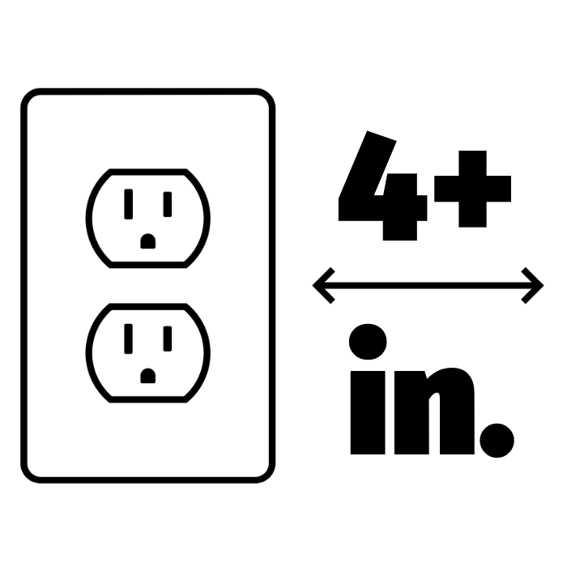
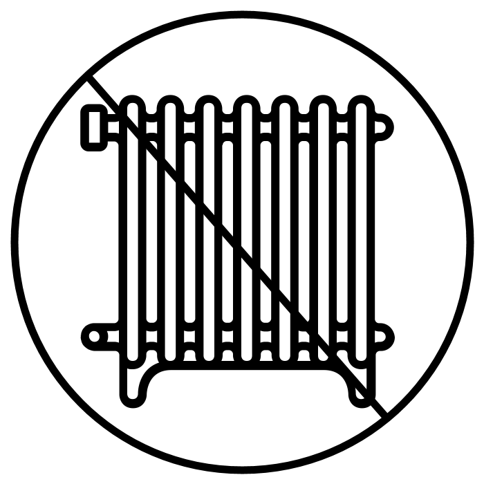
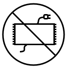
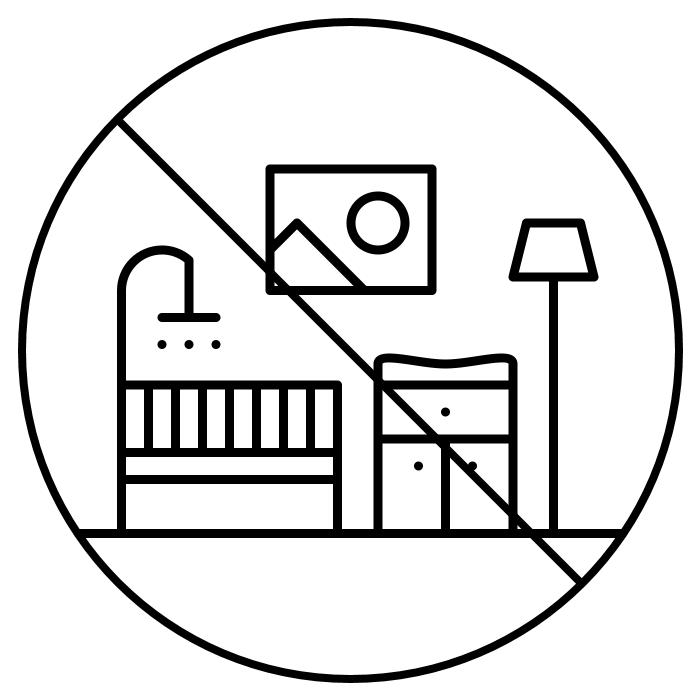
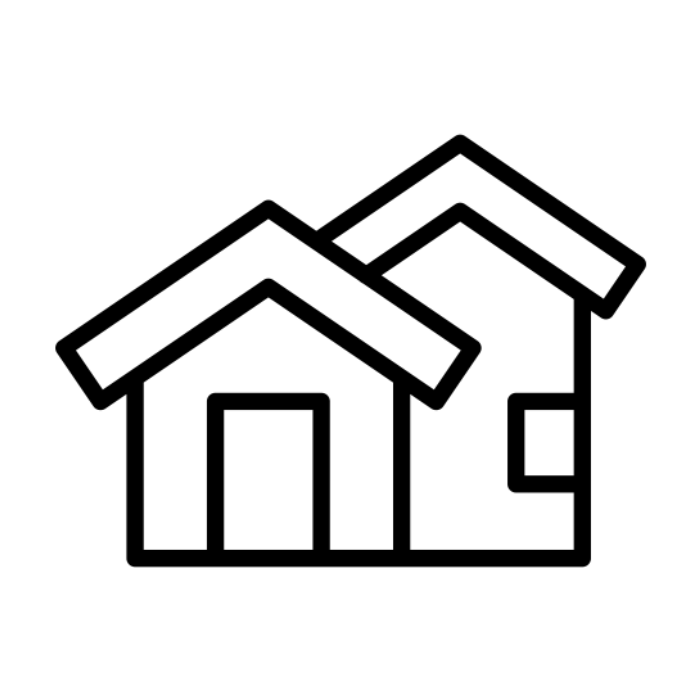
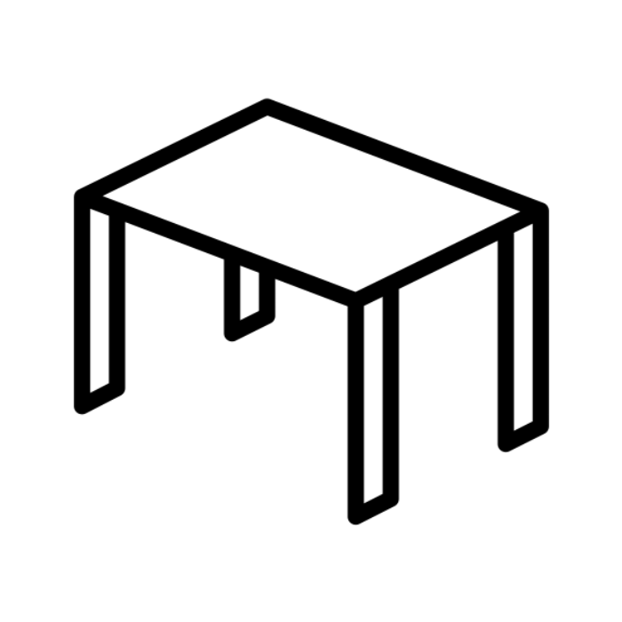
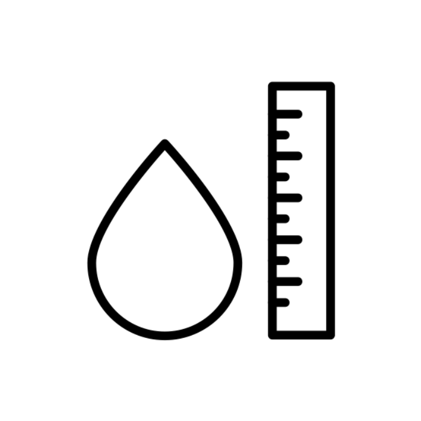

DO locate your humidifier on an inside wall near an electrical outlet. The humidifier should be at least 4 inches (10 cm) away from the wall for best results.
DO NOT place humidifer near heat sources such as stoves, radiators, and heaters.


Keep the cord out of heavy traffic areas. To avoid fire hazard, NEVER put the cord under rugs or near heat registers.
NEVER use humidifier in a closed room, particularly where a child may be sleeping, resting, or playing (a closed room may result in excessive humidity).

NEVER place humidifier in an area where it is accessible to children.
DO NOT use outdoors.


ALWAYS place humidifier on a firm, flat, level surface. NEVER place it on a rug or carpet, or on a finished floor that may be damaged by exposure to water or moisture.
Do not use humidifier in an area where humidity level is in excess of 50%.
